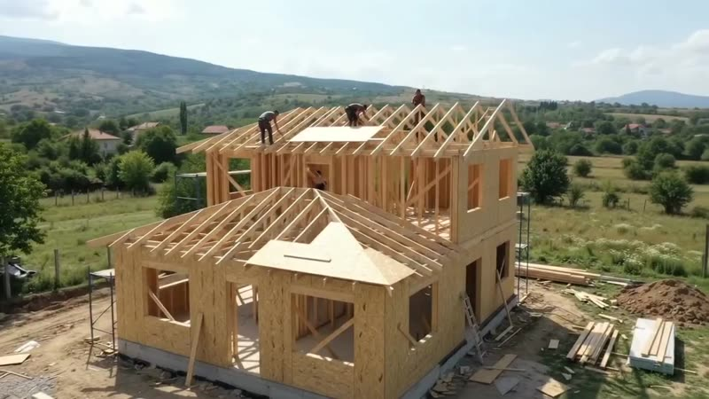

Консултация за вашия парцел и нужди
Изясняваме парцела, нужните помещения и вашите приоритети.
СГЛОБЯЕМИ КЪЩИ. ИНДИВИДУАЛЕН ПОДХОД.
От първата идея до завършения дом — с ясен процес, договорен обхват и внимание към всеки детайл.
Разгледайте реализираните проекти ↘︎01 / РЕАЛИЗИРАНИ ПРОЕКТИ
Вижте реализирани къщи с различна площ, архитектура и ниво на завършеност.
02 / ОТ ИДЕЯ ДО ДОМ
Започваме с вашия парцел, нужди и бюджет. След това уточняваме проекта, обхвата, сроковете и изпълнението.
Изясняваме парцела, нужните помещения и вашите приоритети.
Уточняваме разпределението, материалите, обхвата и бюджета.
Изпълняваме договорените етапи по съгласуван проект и график.
Преглеждаме изпълнението заедно и предаваме договорения обхват.

КОНСТРУКЦИЯТА / СТЪПКА ПО СТЪПКА
От основата до покрива — вижте ключовите етапи при изграждането на дървената конструкция.
Вижте ключовите етапи стъпка по стъпка.
Анимацията не успя да се зареди. Опитайте да обновите страницата.
03 / НИВО НА ЗАВЪРШЕНОСТ
Сравнете трите нива на завършеност. За точна цена подготвяме индивидуална оферта според проекта и терена.
ОСНОВАТА
от 600 €/ м²
Практичен старт за дом с ясен обхват на строителството.
БАЛАНСЪТ
от 820 €/ м²
Балансирано решение с координирани материали и етапи.
ДЕТАЙЛИТЕ
от 980 €/ м²
За клиенти, които търсят завършен дом с индивидуални решения и висок клас материали.
Цените са с включен ДДС и са в сила от 08.04.2026 г. Крайната цена се определя според проекта, терена и избрания обхват.
04 / TED HOUSE
С над 10 години опит и повече от 380 реализирани проекта в България, TED House проектира и изгражда сглобяеми къщи с дървена конструкция. Работим с ясен обхват, координирани етапи и решения, съобразени с вашия парцел, бюджет и ежедневие.
Обсъдете вашия проект ↗︎27 ЕТАПА / ЕДИН ДОМ
Проследете какво се случва на всеки етап — от фундамента до предаването на ключовете.
Сферата се движи сама. Плъзнете с мишка или пръст, за да я завъртите във всяка посока.
Етапите следват подадения списък. Реалната последователност и обхват се уточняват за всеки проект.
ПРЕДИ ДА ЗАПОЧНЕМ
Можем да започнем разговор и преди покупката. За конкретен проект и оферта ще са нужни информация за парцела и условията за строителство.
Цената зависи от площта, архитектурата, терена и нивото на завършеност. Изпратете ни вашата идея, за да уточним обхвата и подготвим индивидуално предложение.
Споделете вашите скици и предпочитания. Възможностите за изпълнение се обсъждат с проектантите спрямо конструкцията и изискванията на парцела.
Срокът се уточнява след преглед на проекта, документите и избрания пакет. Конкретните етапи и график следва да бъдат включени в офертата и договора.
ВАШАТА ИДЕЯ Е СЛЕДВАЩА
Споделете парцела, желаната площ и етапа, до който искате да бъде завършен домът.
+359 897 750 375 ↗︎office@ted-house.comСофия, кв. Суходол
ул. Подлозище 27